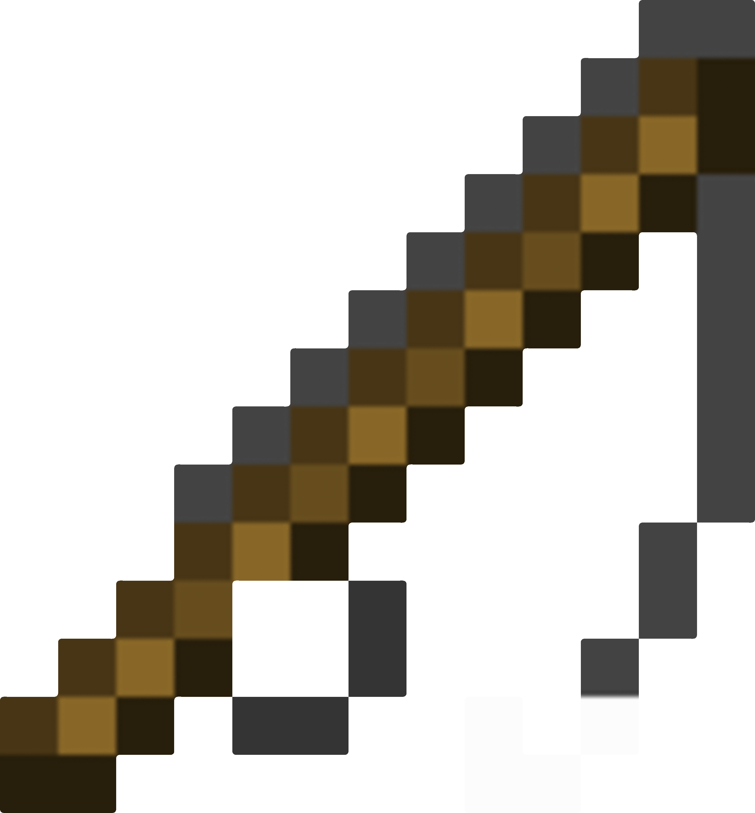

Minecraft Fishing
Never though Minecraft fishing would be interesting, huh?
Minecraft is usually a game that's looked at for children, a sandbox where the limits are only to your imagination and effort put in to make it a reality.
Now in Minecraft, you can do a variety of tasks. You can mine, craft, build, explore, hunt, and even fish. Usually fishing requires patience in real life, and the same is within Minecraft. Fishing in Minecraft however can be made much faster and especially efficient with enchantments and timings.
